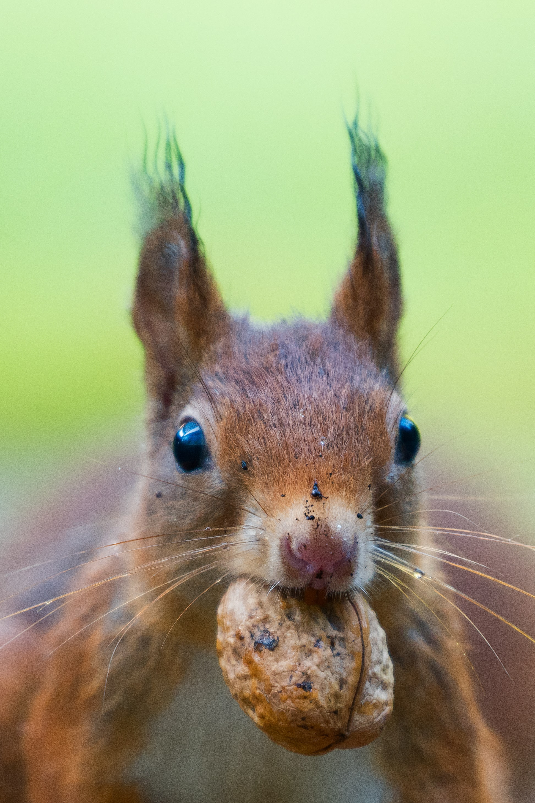
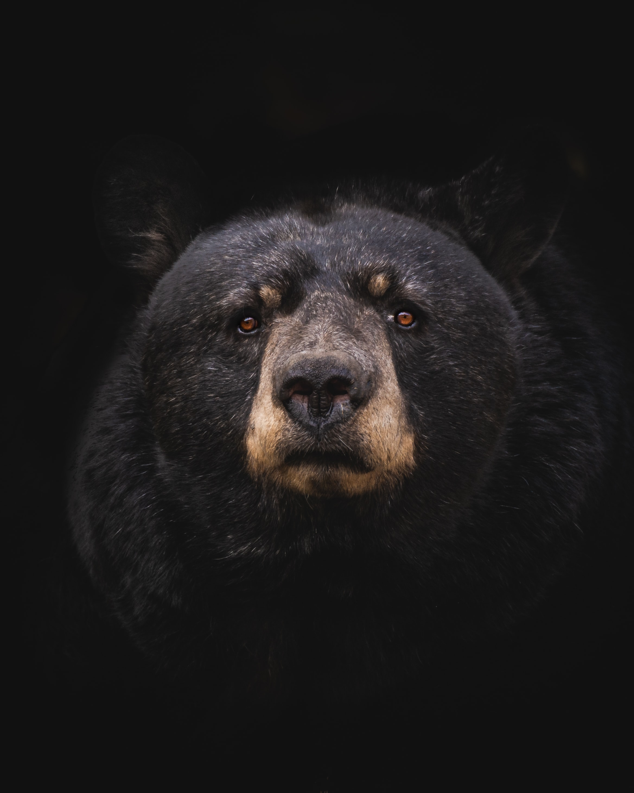
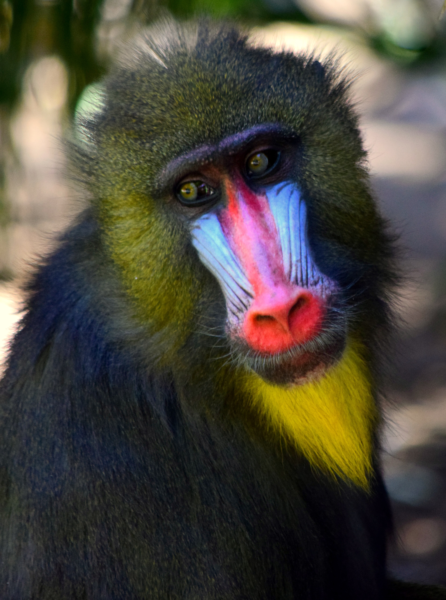
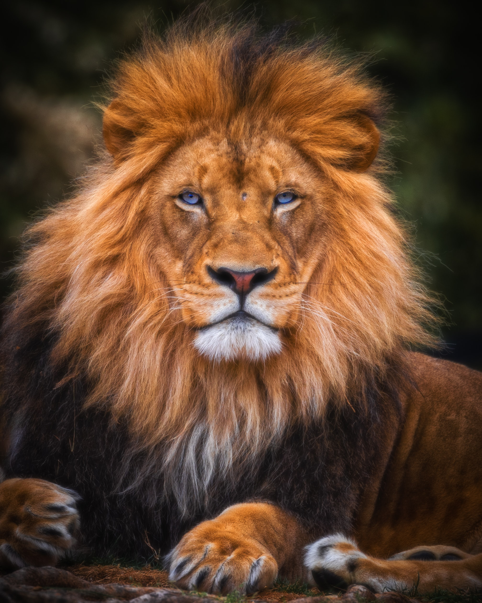

Animais Fantásticos
-

- 
- 
-

- 
- 
Raposa
As raposas são animais mamíferos e onívoros pertencentes à família Canidae. São vulpídeos de porte médio, caracterizados por um focinho comprido e uma cauda longa e peluda.
Também apresentam como particularidade suas pupilas ovais, semelhantes às pupilas verticais dos felídeos.
De cerca de 40 espécies reconhecidas como raposas, somente 12 pertecem ao gênero Vulpes das "raposas verdadeiras", do qual a raposa vermelha é a mais comum.
Também apresentam como particularidade suas pupilas ovais, semelhantes às pupilas verticais dos felídeos.
Esquilo
Os esquilos pertencem a uma grande família de mamíferos roedores, de pequeno e médio porte, conhecida como Sciuridae. No Brasil, são também conhecidos como serelepe, caxinguelê, caxinxe, quatimirim, quatipuru, agutipuru ou acutipuru
Os esquilos estão espalhados por quase todo o mundo, a maioria nas zonas de climas temperado ou tropical, mas também em algumas zonas de clima frio.
Como todos os roedores, possuem presas fortíssimas, com que roem facilmente sementes, principalmente bolotas.
As sementes são as principais fontes de alimentação, mas também consomem insetos e frutas. Quando coletam alimento, enterram algumas sementes que encontram, sendo que algumas chegam a germinar, como pinhões e coquinhos, acabando por plantar árvores como araucária e jerivá.
Urso
Os Ursos (latim científico: Ursidae) constituem uma família de mamíferos plantígrados, geralmente de grande porte, contendo os ursos e os pandas.
Algumas características comuns dos ursos são pelagem espessa, rabo curto, o olfato desenvolvido e as garras não retráteis. Os ursídeos são geralmente animais omnívoros, mas se alimentam principalmente de carne.
A maioria dos ursos costumam preparar-se para hibernar durante o inverno, comendo grandes quantidades de comida antes de entrar em uma toca para o período de sono profundo.
Os ursos existem em todos os continentes, em exceção na África, embora algumas fontes afirmem terem avistado o Urso nandi, mas sem comprovarem a sua existência.
Lobo
O lobo (também chamado de lobo-cinzento; nome científico: Canis lupus) é uma espécie de mamífero canídeo do gênero Canis. É um sobrevivente da Era do Gelo, originário do Pleistoceno Superior, cerca de 300 mil anos atrás.
É o maior membro remanescente selvagem da família canidae. O sequenciamento de DNA e estudos genéticos reafirmam que o lobo-cinzento é ancestral do cão doméstico (Canis lupus familiaris), contudo alguns aspectos desta afirmação têm sido questionados recentemente.
Uma série de outras subespécies do lobo-cinzento foram identificadas, embora o número real de subespécies ainda esteja em discussão.
Embora não sejam tão adaptáveis à presença humana como geralmente ocorre com as demais espécies de canídeos, os lobos se desenvolveram em diversos ambientes, como florestas temperadas, desertos, montanhas, tundras, taigas, campos e até mesmo em algumas áreas urbanas.
Macaco
Macaco é um termo de origem africana (provavelmente do banto makako) utilizado como designação comum a todas as espécies de símios ou primatas antropoides. É aplicada restritivamente no Brasil aos cebídeos (ou macacos do Novo Mundo) em geral. No sentido estrito, "macaco" refere-se às espécies de primatas pertencentes ao género Macaca.
A designação mico se origina, segundo o Dicionário Aurélio, do caraíba (karib) continental. É bastante usada no Brasil, onde costuma aplicar-se às espécies do gênero Cebus, no Sul, e às espécies de pequeno porte, ou saguis, no Norte.
O termo sagui se origina do tupi antigo sagûi e também designa os macacos calitriquídeos de pequeno porte.
Ainda segundo Cunha, o termo símio, que também designa os macacos (tendo sido registrado no português dos séculos XVI e XVII), vem do latim simius, de simus, "que tem o nariz chato".
Leão
O leão [feminino: leoa] (nome científico: Panthera leo) é uma espécie de mamífero carnívoro do gênero Panthera e da família Felidae. A espécie é atualmente encontrada na África subsaariana e na Ásia, com uma única população remanescente em perigo, no Parque Nacional da Floresta de Gir, Gujarat, Índia.
Foi extinto na África do Norte e no Sudoeste Asiático em tempos históricos, e até o Pleistoceno Superior, há cerca de 10 000 anos, era o mais difundido grande mamífero terrestre depois dos humanos, sendo encontrado na maior parte da África, em muito da Eurásia, da Europa Ocidental à Índia, e na América, do Yukon ao México..
É uma dos quatro grandes felinos, com alguns machos excedendo 250 quilogramas em peso, sendo o segundo maior felino recente depois do tigre.
A pelagem é unicolor de coloração castanha, e os machos apresentam uma juba característica.